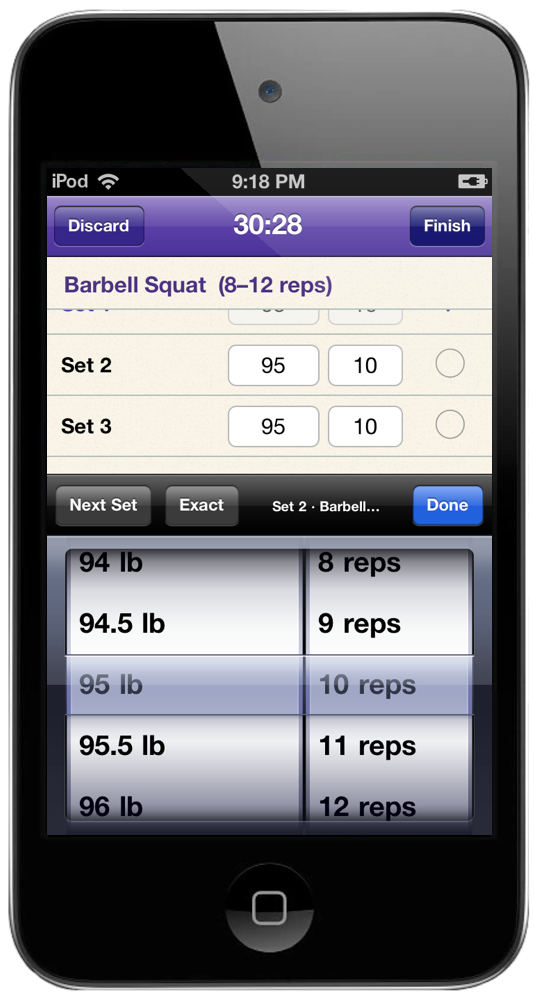
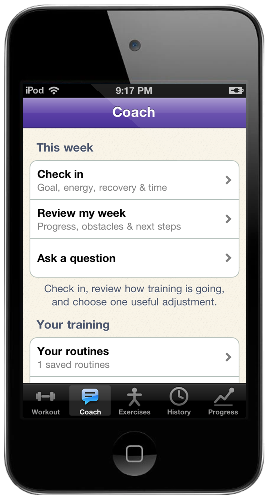
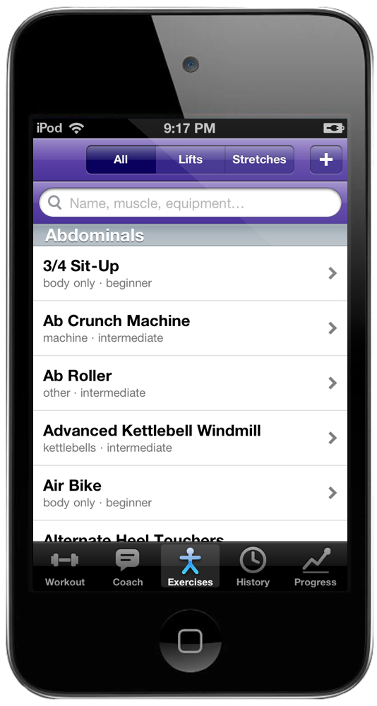
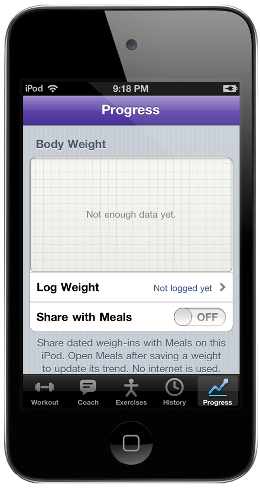

Tap a set for the weight and rep wheels. Half-pound steps include 13 lb; Exact entry handles fractions such as 13.25. Mark a set done and the rest timer starts.

The Coach tab keeps your check-in, weekly review, routines and saved notes together. Tell it how you feel and how much time you have. Work toward your goal with a plan you can keep.

Search offline by name, muscle, equipment or a familiar nickname. RDL, pec deck and small spelling mistakes work too. Browse photos, instructions and your best set.

Body weight, volume per week, your streak. One tab, no typing. Log body weight and optionally share weigh-ins locally with Meals for its expenditure estimate. No server or running Mac is required.
History keeps every workout. Tap an exercise to chart its estimated one-rep max, heaviest set or total volume over time.
Claude can use a summary of your recent completed workouts, equipment and available time. Every proposed exercise is checked against the library, with bounded sets and reps. Review the routines before adding any.
Ask in Coach for a training review, or Discuss in Claude to continue with an editable draft. Replies read like paper notes, with headings and bullets. Your existing routines and progress stay yours.